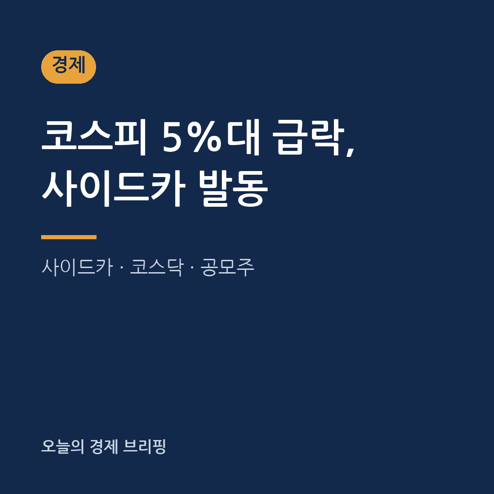
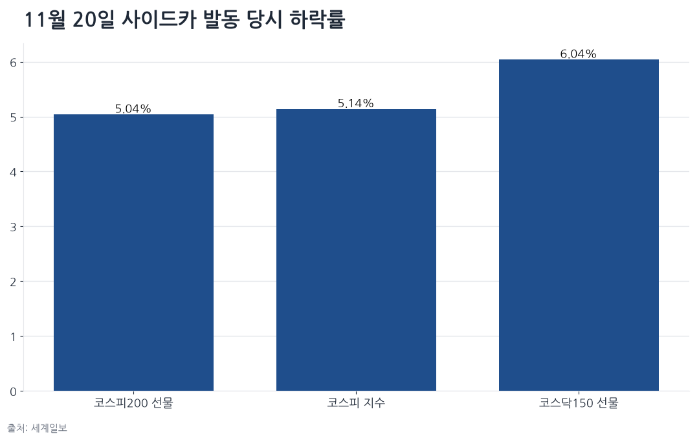

2026-11-20-1533-naver 발행 키트 · 이 페이지는 검색에 노출되지 않습니다.
제목
카테고리
경제태그
본문 (그림·표 포함)
휴대폰 블로그 앱에서는 그림이 같이 붙지 않을 수 있어요. 그때는 [글자만 복사] 후 아래 이미지를 저장해 [그래프1]·[표1] 자리에 첨부하세요.

오늘 낮에 증시 앱 열어보고 깜짝 놀라신 분 많으셨죠? 저도 숫자를 보고 한 번 더 확인했어요. 오늘 국내 증시에서 무슨 일이 있었는지, 계좌 속 숫자가 왜 이렇게 출렁였는지 차근차근 정리해 볼게요.
▶ 오늘 낮, 사이드카가 두 번 울렸어요
먼저 코스피 시장에서 오전 11시 54분에 매도 사이드카가 발동됐어요. 사이드카는 선물 가격이 갑자기 크게 떨어질 때, 프로그램 매매(컴퓨터가 자동으로 내는 대량 주문) 중 매도 주문의 효력을 잠깐 멈추게 하는 장치예요.
그리고 오후 1시 28분에는 코스닥에서도 같은 조치가 나왔어요. 코스닥에서 매도 사이드카가 나온 건 이달 6일 이후 2주 만이라고 해요.
▶ 얼마나 떨어졌길래?
발동 당시 숫자를 한번 볼게요. 표로 먼저 보시면 이해가 빠르실 거예요.
11월 20일 매도 사이드카 발동 정리
| 시장 | 발동 시각 | 발동 당시 선물가격 | 하락률 |
|---|---|---|---|
| 코스피 | 오전 11시 54분 | 755.84 (기준가 796.00) | 5.04% |
| 코스닥 | 오후 1시 28분 | 1,072.80 (종가 1,141.80) | 6.04% |
출처: 세계일보
코스피200 선물은 기준가 796.00에서 755.84까지 내려가 5.04% 하락한 상태였어요. 코스닥150 선물은 전날 종가 1,141.80보다 69.00포인트 낮은 1,072.80으로 6.04% 빠졌고요.
현물 지수도 비슷했어요. 오후 1시 33분 기준으로 코스피는 4,873.65, 전 거래일보다 264.24포인트, 5.14% 내려가 있었어요.

▶ 왜 이렇게 빠졌을까요?
기사에서는 미국 반도체와 인공지능(AI) 관련주가 급락하면서 투자 심리가 얼어붙은 게 원인이라고 짚었어요. 간밤 미국 시장의 불안이 그대로 넘어온 셈이죠.
특히 우리 증시에서 비중이 큰 삼성전자와 SK하이닉스가 각각 6.7% 안팎 내려갔어요. 두 종목이 지수에 미치는 영향이 커서 지수 낙폭도 커졌어요.
▶ 코스닥 사이드카는 이런 조건이에요
코스닥은 코스닥150 선물 가격이 기준 가격보다 6% 이상 내리고, 현물 지수도 3% 이상 내린 상태가 1분 동안 이어지면 발동돼요. 발동되면 프로그램 매매 매도 호가의 효력이 5분간 멈춰요.
쉽게 말해 5분짜리 숨 고르기 시간이에요. 하락을 막아주는 장치는 아니고, 급한 매도 물량이 한꺼번에 쏟아지는 걸 잠깐 늦추는 정도라고 보시면 돼요.
▶ 공모주 시장도 얼어붙었어요
증시가 흔들리니 새로 상장하려는 기업들도 눈치를 보고 있어요. 연합뉴스에 따르면 연말 기업공개(IPO) 시장에서 증시 급락과 기관투자자의 수요예측 부진이 겹치면서 상장 계획을 거두는 기업이 이어지고 있어요.
일부 공모주는 청약에서 물량이 다 채워지지 않은 사례도 나왔다고 해요. 공모주에 관심 있으셨다면 일정이 바뀌거나 취소될 수 있으니 증권사 공지를 꼭 확인해 보세요.
▶ 이런 분들은 확인해 보세요
지금 당장 무엇을 사고팔라는 이야기는 아니에요. 다만 이런 날에는 몇 가지는 점검해 볼 만해요.
내가 가진 자산이 반도체·AI 업종에 얼마나 쏠려 있는지, 빚을 내서 투자한 금액은 없는지, 앞으로 몇 달간 꼭 써야 할 돈이 섞여 있진 않은지요. 숫자가 크게 움직인 날일수록 감정보다 내 계획을 먼저 보는 게 좋아요.
▶ 앞으로 볼 것
내일 아침 미국 반도체·AI 관련주가 진정되는지, 그리고 이번 주 공모주 일정이 예정대로 진행되는지가 첫 번째 확인 포인트예요.
한 줄로 정리하면, 오늘은 미국발 반도체 불안이 국내 증시를 5%대로 흔든 날이었어요. 여러분은 오늘 계좌 보면서 어떤 생각이 드셨나요? 댓글로 편하게 이야기 나눠요.
출처 (본문 맨 아래에 붙여넣기 권장)
- 세계일보, 코스피 이어 코스닥도 매도 사이드카 발동 관련 기사, https://www.segye.com/newsView/20261120509019 - 연합뉴스, 증시 급락과 IPO 시장 위축 관련 기사, https://www.yna.co.kr/view/AKR20261120114800008